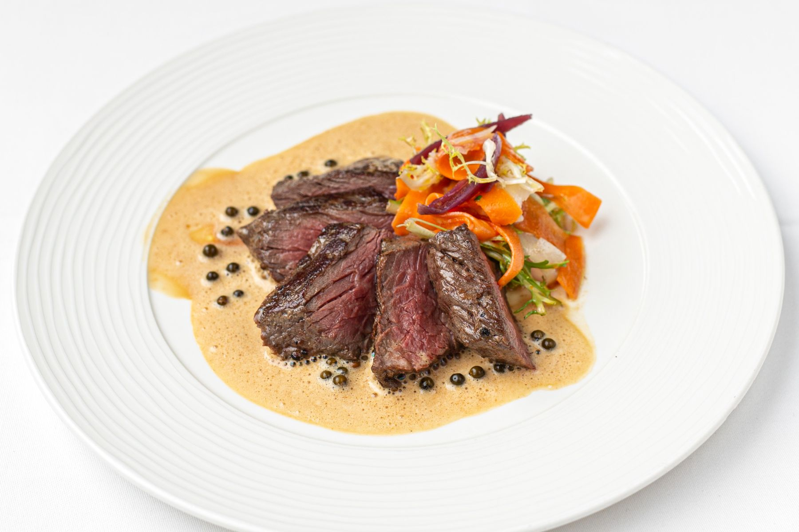

Steak
Wondering what is the best way to cook steak? Whether your preference is a butter-soft fillet steak, flavour-packed sirloin or thriftier cut like bavette, rump or onglet, quick-cooking and constant attention should be paid when cooking your beef. With only a few minutes leeway between rare and well-done, timing is key. We've put together some tips to help you from start to finish on how to cook a steak.